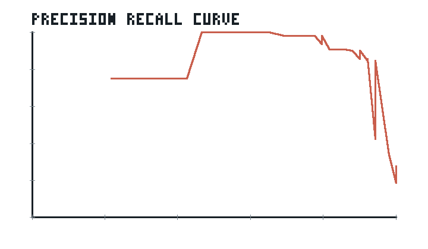
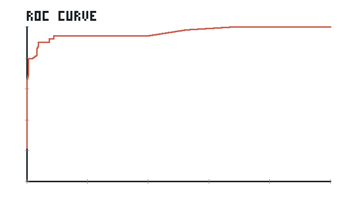
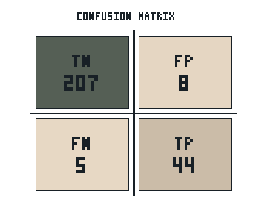

Generated offline from demo datasets.
| Model | Micro Precision | Micro Recall | Micro F1 | Macro F1 |
|---|---|---|---|---|
| LLM Hybrid | 0.8462 | 0.898 | 0.8713 | 0.8822 |
| Hybrid | 0.7925 | 0.8571 | 0.8235 | 0.8407 |
| TF-IDF | 0.7959 | 0.7959 | 0.7959 | 0.8083 |
| Embeddings | 0.963 | 0.5306 | 0.6842 | 0.667 |
| Jaro-Winkler | 0.9524 | 0.4082 | 0.5714 | 0.5509 |
| Levenshtein | 0.9286 | 0.2653 | 0.4127 | 0.3996 |
Precision-Recall curve · ROC curve



| Method | Total Runtime (s) | Average Runtime (s) | Peak Memory (MB) |
|---|---|---|---|
| Levenshtein | 0.0026 | 0.0006 | 0.0126 |
| Jaro-Winkler | 0.0024 | 0.0006 | 0.0084 |
| TF-IDF | 0.0484 | 0.0121 | 0.0882 |
| Embeddings | 0.004 | 0.001 | 0.0098 |
| Hybrid | 0.0521 | 0.013 | 0.0689 |
| LLM Hybrid | 0.1039 | 0.026 | 0.0988 |
| Engine | Records | Runtime (s) | Candidate Pairs | Mode | Notes |
|---|---|---|---|---|---|
| Local Engine | 1,000 | 0.0001 | 62,000 | measured | Measured local synthetic blocking and grouped candidate-count pass. |
| Spark Engine | 1,000 | 1.4353 | 62,000 | measured | Measured with Spark local[*] range, blocking, and grouped candidate-count pass. |
| Local Engine | 10,000 | 0.0008 | 6,245,000 | measured | Measured local synthetic blocking and grouped candidate-count pass. |
| Spark Engine | 10,000 | 0.0953 | 6,245,000 | measured | Measured with Spark local[*] range, blocking, and grouped candidate-count pass. |
| Local Engine | 100,000 | 0.0084 | 624,950,000 | measured | Measured local synthetic blocking and grouped candidate-count pass. |
| Spark Engine | 100,000 | 0.1059 | 624,950,000 | measured | Measured with Spark local[*] range, blocking, and grouped candidate-count pass. |
| Local Engine | 1,000,000 | 0.0847 | 62,499,500,000 | measured | Measured local synthetic blocking and grouped candidate-count pass. |
| Spark Engine | 1,000,000 | 0.1881 | 62,499,500,000 | measured | Measured with Spark local[*] range, blocking, and grouped candidate-count pass. |
| Dataset | Model | Precision | Recall | F1 | Runtime (s) | Memory (MB) |
|---|---|---|---|---|---|---|
| companies.csv | Levenshtein | 1.0 | 0.3846 | 0.5556 | 0.0008 | 0.0126 |
| companies.csv | Jaro-Winkler | 1.0 | 0.5385 | 0.7 | 0.0006 | 0.0082 |
| companies.csv | TF-IDF | 1.0 | 0.5385 | 0.7 | 0.0121 | 0.0882 |
| companies.csv | Embeddings | 1.0 | 0.5385 | 0.7 | 0.0009 | 0.009 |
| companies.csv | Hybrid | 1.0 | 0.7692 | 0.8696 | 0.0125 | 0.0459 |
| companies.csv | LLM Hybrid | 1.0 | 0.7692 | 0.8696 | 0.0258 | 0.0878 |
| people.csv | Levenshtein | 1.0 | 0.3333 | 0.5 | 0.0006 | 0.0078 |
| people.csv | Jaro-Winkler | 1.0 | 0.5833 | 0.7368 | 0.0006 | 0.0082 |
| people.csv | TF-IDF | 1.0 | 1.0 | 1.0 | 0.0116 | 0.043 |
| people.csv | Embeddings | 1.0 | 0.8333 | 0.9091 | 0.0009 | 0.0089 |
| people.csv | Hybrid | 0.9231 | 1.0 | 0.96 | 0.0121 | 0.0406 |
| people.csv | LLM Hybrid | 1.0 | 1.0 | 1.0 | 0.0244 | 0.0706 |
| universities.csv | Levenshtein | 0.5 | 0.0833 | 0.1429 | 0.0006 | 0.0079 |
| universities.csv | Jaro-Winkler | 0.6667 | 0.1667 | 0.2667 | 0.0006 | 0.0083 |
| universities.csv | TF-IDF | 0.4444 | 0.6667 | 0.5333 | 0.0122 | 0.0613 |
| universities.csv | Embeddings | 0.8 | 0.3333 | 0.4706 | 0.001 | 0.009 |
| universities.csv | Hybrid | 0.4444 | 0.6667 | 0.5333 | 0.0135 | 0.059 |
| universities.csv | LLM Hybrid | 0.6 | 1.0 | 0.75 | 0.0266 | 0.0895 |
| products.csv | Levenshtein | 1.0 | 0.25 | 0.4 | 0.0006 | 0.008 |
| products.csv | Jaro-Winkler | 1.0 | 0.3333 | 0.5 | 0.0006 | 0.0084 |
| products.csv | TF-IDF | 1.0 | 1.0 | 1.0 | 0.0125 | 0.0712 |
| products.csv | Embeddings | 1.0 | 0.4167 | 0.5882 | 0.0012 | 0.0098 |
| products.csv | Hybrid | 1.0 | 1.0 | 1.0 | 0.014 | 0.0689 |
| products.csv | LLM Hybrid | 1.0 | 0.8333 | 0.9091 | 0.0271 | 0.0988 |
{kind=link}
{kind=link}